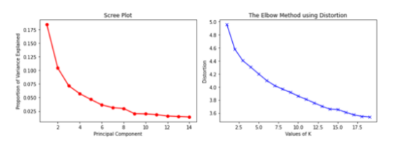
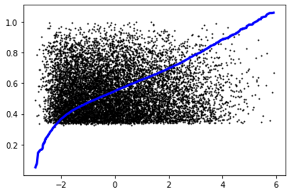

Introduction/Background:
Film has been a powerful medium for over 100 years, and the industry only continues to grow due to technological development. Everyone can easily watch movies using their phones and computers, any time, anywhere. This boom of streaming services has allowed us to collect big data including movie ratings and user-defined tags. We tried to put ourselves in the shoes of streaming companies by creating models which will optimize our selection of available streaming titles to maximize customer satisfaction. By implementing these machine-learning solutions, a streaming company can gain a better insight when prioritizing what kinds of movies they should (and should not) license for streaming in order to optimize profits.
Data Set:
The dataset that we are utilizing for this project will be the MovieLens 25m dataset. Taken from the source readme: "It contains 25,000,095 ratings and 1,093,360 tag applications across 62,423 movies." These tags applications are used to determine 1,128 tag relevance scores for each movie. The full set can be accessed here.
Methodology:
- We expanded on previous analyses which not only used outdated datasets but also did not return any meaningful results.
- We utlized multiple preprocessing steps, including PCA and feature selection, in order to get a more complete data set that could be more easily used for our learning algorithms.
- For our unsupervised learning portion of the project, we incorporated multiple clustering algorithms (K-Means, DBSCAN, GMM) in order to get a sense of which type of movies are the most prevalent among a set of "popular" movies.
- For our supervised learning portion of the project, we incorporated multiple regression models (Linear, Lasso, SVM, Linear Ridge, Kernel Ridge) in addition to a simple neural network to understand which tags/features contribute the most to making a movie popular.
Preprocessing:
We used many steps in order to preprocess our data:
- Remove Outliers:
Plotting our most popular movies against their features, we noticed there were a few movies that were excceedingly popular, and thus contributed to an exponential shape. To remedy this situation, we manually searched through our smaller set of movies, and removed those which exhibit this behavior. Below is an image to demonstrate the outliers that we removed.
- Normalize the Range of our Data:
Another step we took to account for popularity differences, was to normalize our popularity by simply dividing each popularity by the largest popularity still present within the data. This would ensure everything was on a 0-1 scale.
- Dimensionality Reduction:
Finally, since we had 1,128 features for each movie to consider, we needed ways to select the most important tags to create efficient algorithms that run in a suitable amount of time.
We first used a PCA algorithm to select the least amount of linearly independent features to cover 95% of the variance within our data.
We also utilized feature selection by a minimum variance threshold to ensure that only important features/not redundant features were being considered during our later on algorithms.
Unsupervised Learning:
For the unsupervised learning portion of our project, our main goal was to group movies into clusters based on their unique tag genome. Once we had determined each cluster, we were able to discern which type of movies are the most prevalent among the 500 most popular movies. We felt clustering was very applicable to our problem, as essentially, we can use the size of clusters to determine which attributes in popular movies are the most prevalent. We used three different clustering algorithms overall:
- Elbow Method and Scree Plot:
To find the optimal number of principle components to use, we attempted to use a scree plot, but we did not receive a clear result, as we believe our data had a low intrinsic dimensionality. To find the optimal number of clusters to use for K-Means, we attempted to use the elbow method, but we were not able to find a clear result yet again because we had a lot of overlap between the data (tags). The results for both plots can be seen below.

- K-Means:
Because we were not able to find clear results from our scree and elbow plots, we ran mutliple iterations using different values for the number of clusters. Using the metrics we defined in the section below, we determined our best K-Means plot to have 11 clusters. The plot of which can be seen below.

- GMM:
For our next clustering algorithm, we attempted to use a soft clustering algorithm (GMM). Similar to K-Means, we iterated through multiple different values for the components. Using the metrics defined below, we determined our best GMM clustering to use 12 components. The plot of which can be seen below.
- DBSCAN:
For our last clustering algorithm, we attempted to use a density based approach, but since our points overlapped across their many features, we were unable to yield any frutiful results in comparison to our K-Means and GMM algorithms. For example, in this plot below, much of the points are part of a few large clusters.
- From all of our clustering algorithms, we determined our best approach to be using GMM, as we felt a soft clustering also made more logical sense, as movies are not typically constrained to one "tag"/feature. The results and metrics of all of our clustering approaches can be viewed under /results.
Supervised Learning:
For the supervised learning portion of this project, we wanted to find the optimal combination of features that would lead to the most popular movie. We used popularity as our label. To accomplish this task, we mainly attempted two different approaches, regression models and a neural network:
- Regression Models:
Our first regression model that we used was linear regression, but we received poor results based on our metrics defined below. Visually, this is apparent, as seen in our graph below.

Our second regression model that we attempted was a lasso regression. However, the Lasso approach most likely was not helpful because it utilizes the L1-norm, which is more effective when analyzing datasets with high intrinsic dimensionality, in contrast to ours. Our result, which we cannot make sense of, is below.
While we did attempt more regression models, we found our best model, based on our supervised learning metrics, to be a kernel ridge regression using an additive chi square kernel. However, this is still not fully encompassing of all points due to the nature of our dataset.

We tried the same supervised methods after using Feature Selection, but the results were not worth mentioning as they were even less representative models.
- Neural Networks:
The second supervised learning method we used was to create a neural network. The input to this network would be our 1,128 tags/features, and the output would be the popularity of a movie posessing some combination of these tags. This was a much more complex undertaking and was harder to visualize, but we felt as if it was an extremely applicable method to our problem, as higher weights would be given to tags that are more likely to contribute to a movie being popular. This model provided the best and most representative representation of our data, according to our supervised learning metrics. After calibration, we found our best results used the densely-connected Neural Network had 1129 Input Nodes; 7 Hidden Layers, each composed of 95 Nodes; and one output node. Both the input layer and each hidden layer utilized the Rectified Linear Unit Activation Funtions (ReLU), while output node used a linear activation function. We allowed the network to be trained for 25 Epochs using 75% of the data. The training of our neural network can be seen below.
- From all of our supervised learning methods, we determined our best approach to be using a Neural Network, as it provided a complex enough model to represent our dataset. The results and metrics of all of our supervised learning approaches can be viewed under /results.
Metrics:
We used many different metrics to determine which unsupervised and supervised learning algorithm worked the best:
- Silhouette Coefficient (Unsupervised):
The formula for this metric can be seen below. Here a represents the mean distance between a sample and all other points in the same class and b represents the mean distance between a sample and all other points in the next nearest cluster.
- Davies-Bouldin Index (Unsupervised):
The formula for this metric can be seen below. Here si represents the average distance between each point of cluster i and the centroid of that cluster – also know as cluster diameter. dij represents the distance between cluster centroids i and j.
- Calinski-Harabasz Score (Unsupervised):
This metric is essentially defined as the ratio of the between-clusters dispersion mean and the within-cluster dispersion. The formula for this metric can be seen below.
- Unsupervised Summary: Essentially, all of these metrics measure the same characteristics of a "good" cluster, where clusters further apart and less disperesed return more favorable scores. However, we chose to use multiple metrics to measure our results, as we felt none is absolute, and we were attempting to measure which clustering algorithm was the best, and based on how they are calcualted, some metrics may favor a certain type of clustering over the other.
- R2 (Supervised):
This metric represents the proportation of variance of y that can be explained by independent variables wihtin the model and it indicates a "goodness of fit". The formula can be seen below.
- Explained Variance and RMSE (Supervised):
Both of these metrics essentially measure the same value of how far the true value is from the predicted value. Both are almost the same formula to calcualte; however, explained variance also take into account the average error across all samples. The formula for RMSE can be seen below (one would take the root of this result).
- Supervised Summary: These metrics are a good measure of how well our line is a good prediction of the popularity of a sample when a genome tag is supplied. We chose to use both, as RMSE gives us information of how well our model performs in absolute terms while R2 indictates the performance in relative (percentage) terms.
Discussion:
Ideally, we will be able to more accurately find movies that will suit customers’ interests. Unlike an individualized recommendation algorithm, our algorithm will not track users’ choices or use cookies to look at their histories. Instead of being personalized to one specific user, it is based on the general public’s interests and privacy-friendly to individuals. We are simply trying to promote movies that the general public is interested in watching. With more middle-of-the-road customers then subscribing to streaming services to watch movies they are interested in, more anonymous data can be collected to further the beneficial impact of the algorithm.
Although we were not able to get concrete results, it would be hard to do so in a field so subjective as the film and television industry. Our clustering, through many trials, did seem to consistently group together large clusters of 1) Sci-Fi and Fantasy movies followed by 2) Action movies. therefore, we would recommend streaming companies license movies from these genres to maximize viewer satisfaction.
It is additionally difficult to generalize results from our Neural Network as it was not fully accurate and additionally hard to interpret results from. We did consider using Gradient Ascent/Descent Optimization, which is effectively optimizing the result of the label with respect to individual features; in other words, the practical implementation of a partial derivative.
An example visualization of a feature (utilizing PCA for simplicity) and its individual impact on popularity. Taking the derivative and optimizing the y-value (our label, popularity) would be optimal. Doing this for every feature would result in the discovery of the optimal set of features which should be possessed by a movie in order to maximize its popularity.
However, the interpretations of these features, if found, would not be able to simply conjure up a formulaic and perfect movie. There are so many unseen variables which cannot be accounted for which affect a consumer's enjoyment of a film.
Additionally, our algorithm’s results could have a ripple effect throughout the film industry; big studios seeking profits can learn how to better appeal to customers, and indie-film producers and audiences can figure out what they should stay away from to create more unique films.
Final Presentation:
Infographics:
References:
- https://towardsdatascience.com/predicting-imdb-movie-ratings-using-supervised-machine-learning-f3b126ab2ddb
- https://medium.com/hanman/data-clustering-what-type-of-movies-are-in-the-imdb-top-250-7ef59372a93b
- https://citeseerx.ist.psu.edu/viewdoc/download?doi=10.1.1.702.8712&rep=rep1&type=pdf
- Scikit-learn: Machine Learning in Python, Pedregosa et al., JMLR 12, pp. 2825-2830, 2011